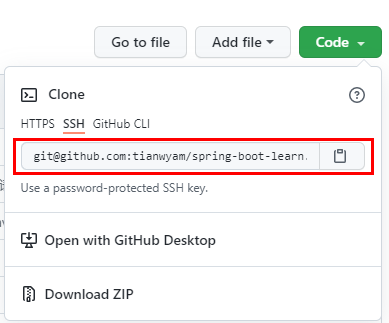

Github ssh key 解决提交后push频繁输入用户名和密码
问题现象：每一次提交后，push都需要输入用户名密码？
原因是：在克隆项目源的时候使用的是 https方式
比如：
git clone https://github.com/tianwyam/spring-boot-learn.git
每一次提交后push到GitHub上时，都需要填写用户名和密码，很麻烦
解决办法：把https方式换成 SSH方式
首先确保 GitHub配置是 SSH key
个人设置 setting -> SSH and GPG keys
新建 SSH keys
首先在本地 打开 git-bash
查看SSH目录，若是提升没有此目录，则没有新建过
cd ~/.ssh
生成新的SSH key
ssh-keygen -t rsa -C "GitHub上登录的邮箱地址"
然后什么事也不要管，也不要想着去修改路径什么的，没这个必要，不要给自己找不必要的麻烦，一直回车
SSH目录下会生成 这些文件
id_rsa
id_rsa.pub
打开 id_rsa.pub 文件，全部复制里面的内容
在GitHub的设置页面 setting -> SSH and GPG keys 新建SSH key
title随便填写，内容就把刚复制 id_rsa.pub 文件里面的内容
保存，就生成了
然后修改 克隆方式 改 为 SSH方式
首先查看 克隆方式
git remote -v
移除原有的https方式
git remote rm origin
添加新的源头SSH方式
git remote add origin GitHub项目的SSH链接

查看最终的结果
git remote -v
现在提交后 push就不会再频繁的输入用户名和密码了